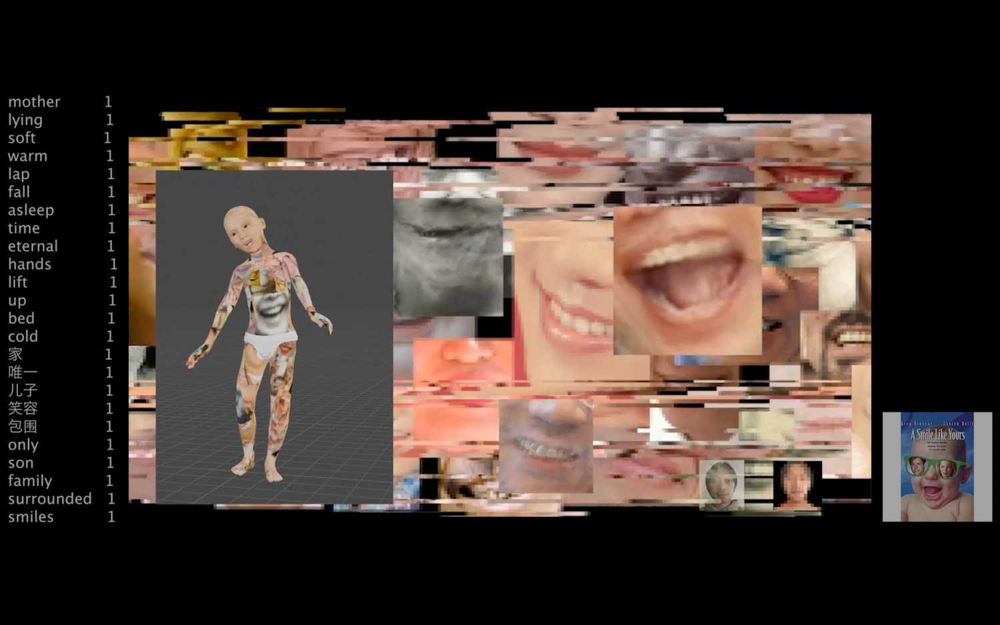
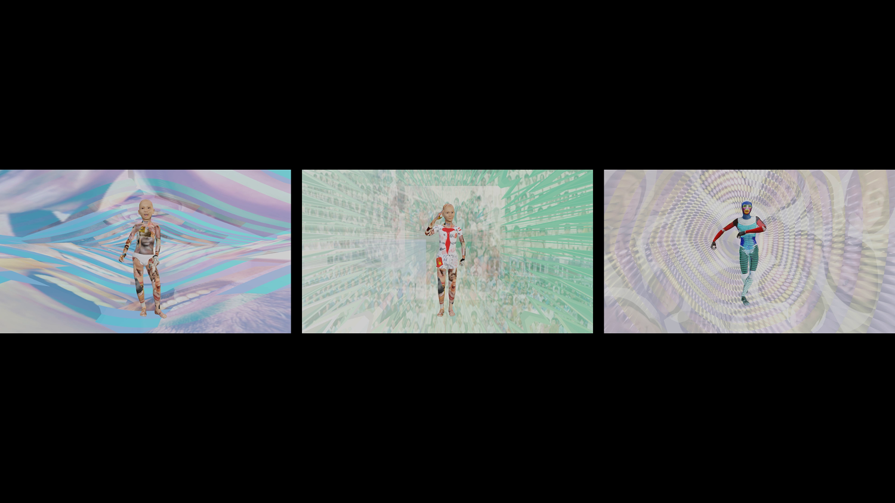
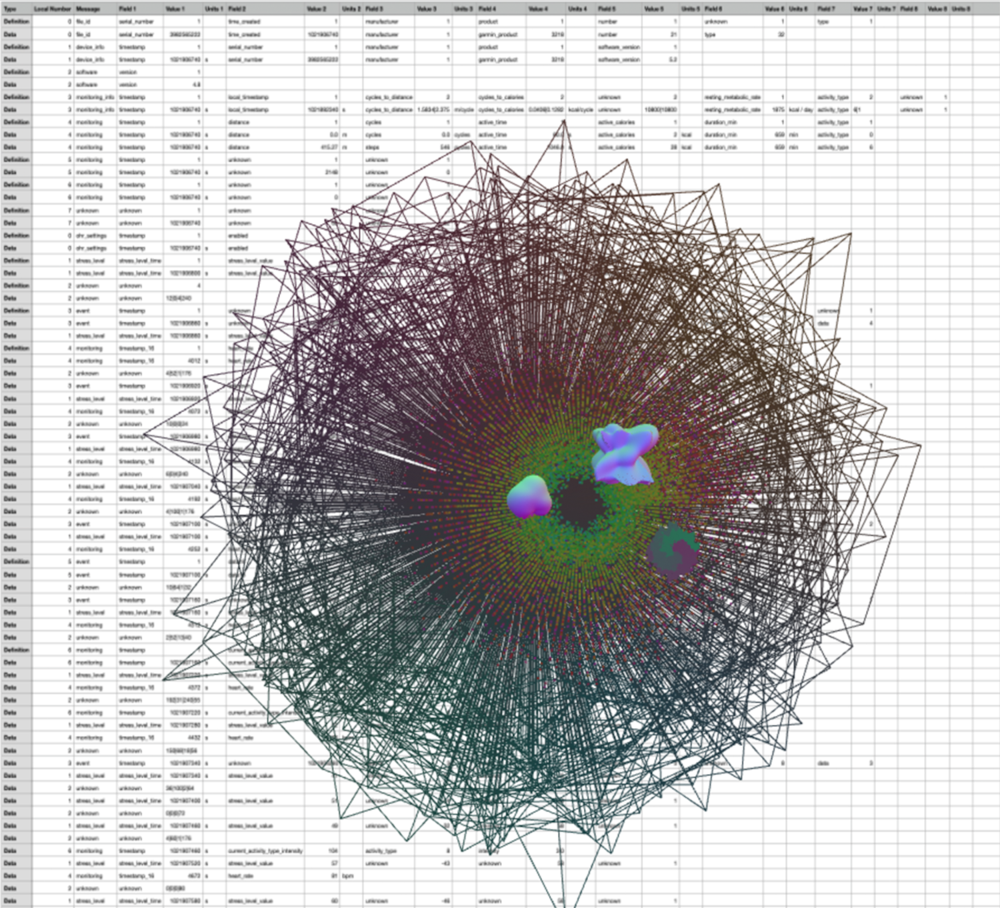
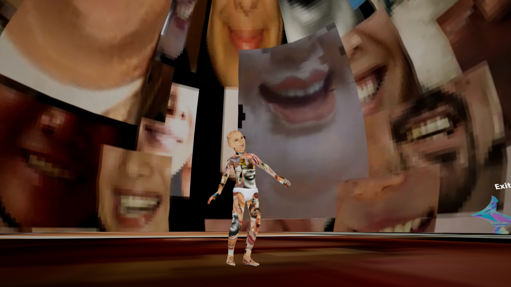

Aliens of Me, Website, 2022-2024
The project Aliens of Me started as a website on GitHub. It is about a virtual avatar constructing his identity from my personal data, including memories shared online and health data captured by the smartwatch. Later, it developed into a narrative video and VR experience. This website includes web-based animations with JavaScript (p5.js, three.js, tone.js), AI generation, and 3D production.
Website: https://wenjunii.github.io/Lifeography/
Animation Screen Recordings: https://www.youtube.com/playlist?list=PLargONL3LhmL9U0mNeZ4XVi3PMFSFHiN2

Aliens of Me, Video, 2022-2024
A narrative video about the project Aliens of Me. It is developed from the original project on the GitHub website. It is about a virtual avatar constructing his identity from my personal data, including memories shared online and health data captured by the smartwatch.

Aliens of Me, Three-channel Animation, 2023-2024
A three-channel animation minted as an NFT about the growth of the avatars in the project with the shape generated from my health data.

Aliens of Me, Webpage, 2022-2023
A webpage shows the conversation between AI (OPT and GPT) and me in our native languages, corresponding with AI-generated images with the contents.
Webpage: https://wenjunii.github.io/Lifeography/response.html
Aliens of Me, Web-based (Data-based) Animation, 2022-2024
A web-based data visualization animation from my health data. It consists of JavaScript (three.js, tone.js) and 3D production. Audience can move around this this 3D data visualization space.
The original animation: https://wenjunii.github.io/Lifeography/data.html
Aliens of Me, Web-based (Data-based) Animation, 2023-2024
A web-based (data-based) interactive shapes and sounds generator from my health data. It consists of JavaScript (three.js, tone.js) and 3D production. Audience can move around this this 3D space.
The original animation: https://wenjunii.github.io/Lifeography/shape.html
Aliens of Me, WebXR, 2023-2024
A WebXR experience of the project Aliens of Me. It is developed from the original project on the GitHub website and the narrative video. It is about a virtual avatar constructing his identity from my personal data, including memories shared online and health data captured by the smartwatch. It is built on Mozilla Spoke.
WebXR: https://verse.loop.onland.io/PQBMpba/distant-different-dominion
Aliens of Me, VR, 2022-2024
A VR experience of the project Aliens of Me. It is developed from the original project on the GitHub website and the narrative video. It is about a virtual avatar constructing his identity from my personal data, including memories shared online and health data captured by the smartwatch. It is built on Unreal Engine.
Screen Recordings: https://www.youtube.com/playlist?list=PLargONL3LhmIkN07KAqFoEwfbGm8qxjf3
Aliens of Me, Installation, 2023-2024
A site-specific installation consists of the datasheets of my health data, a projection of the data visualization, and a virtual avatar. A self-exploration within physical and virtual spaces, as the data is constructing a live animation, a dynamic avatar, and an expanding physical body.


Aliens of Me, Installation, 2024-2025
An installation consists of data sheets of my body data captured by the smartphone, QR codes with AR animations, VR experience, and an interactive animation of an avatar. It is about an avatar reconstructing his identity based on my personal data, including memories shared online and health data captured by the smartwatch. This installation is an interplay between real and virtual with an immersive and interactive environment.


IO (I/O) Playground, Interactive Installation, Ongoing
Interactive sculpture/installation consisting of data sheets of my health data, web-based animation of data visualization (projection mapping on the data sheets), audio of generated sound with the health data, 3D printings of generated shapes with the health data, sensors and actuators with Arduino. I intend to interact my data with the audience’s data from sensors.